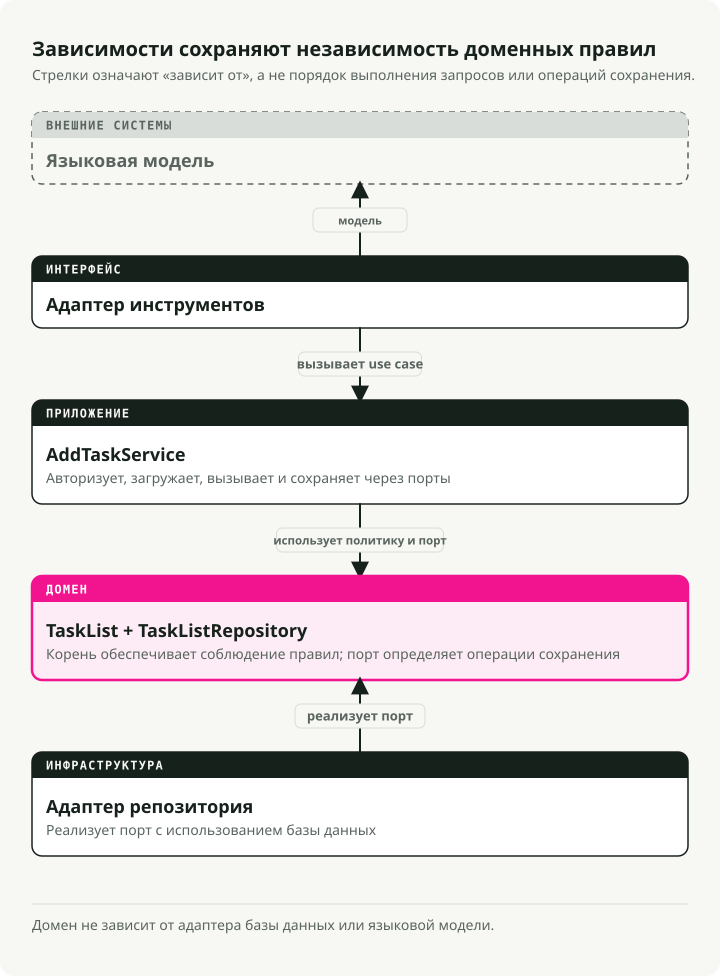
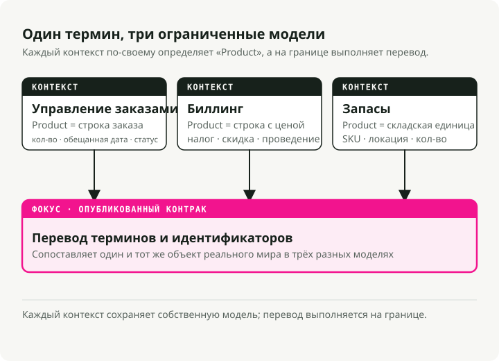
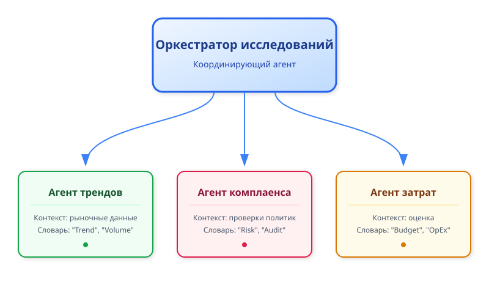
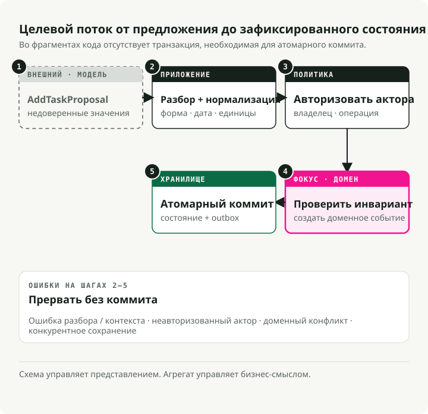
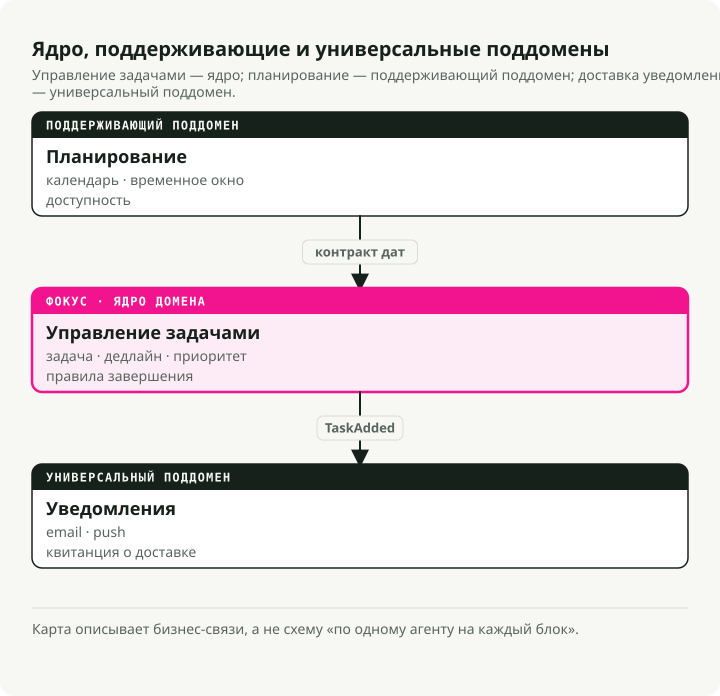

Автоматический перевод
Эта статья была автоматически переведена с оригинальной английской версии.
Проектирование, ориентированное на домен, для ИИ-агентов: ограниченные контексты, инструменты и бизнес-правила
Кратко
Проектирование, ориентированное на домен (DDD), обеспечивает командам, разрабатывающим ИИ-агентов, общий словарь терминов и четкую структуру взаимодействия между подсистемами. Его следует применять в ситуациях, когда формулировки запросов отклоняются от бизнес-требований, а правила распределены по разным шаблонам.

Почему дизайн, ориентированный на домен, важен для ИИ-агентов
Большинство проектов с агентами терпят неудачу не из-за плохого кода. Они проваливаются потому, что те, кто формулирует запросы, и те, кто фактически отвечает за бизнес-процессы, не могут договориться о значении отдельных элементов. Для обеспечения соответствия требуется выполнение «проверки политик», но в результате получается... process_data() метод. Никто не знает, зачем он нужен, поэтому требования постоянно меняются, и система становится всё более устаревшей. DDD решает эту проблему, ставя в центр бизнес-домен. Не схему базы данных, не шаблоны запросов — а реальный процесс из реального мира, который вы пытаетесь моделировать. Практические преимущества:
- Общий язык. Отделы продукта, операционной работы и инженерии используют одни и те же термины. Когда отдел контроля соответствия говорит о «запросе на возврат средств», именно это будет указано в коде, шаблонах запросов и документации.
- Чёткий объём работ. Вы разрабатываете только то, что действительно важно: основные рабочие процессы и правила, за которые кто-то конкретно отвечает. Меньше «клеевого» кода, который ломается при изменении требований.
- Адаптивность. При изменении политик достаточно обновить один чётко определённый фрагмент, вместо того чтобы разбираться в целом монолите.
Это особенно важно в сферах с частыми изменениями правил: финансовой отрасли, здравоохранении, регулируемых операциях. DDD даёт вам реальный шанс успевать за изменениями.
Стратегические основы
DDD представляет собой набор шаблонов, а не единую концепцию. Обычно он делится на две части:
- Стратегический дизайн: аспекты «большой картины». Определение границ, команд и способов взаимодействия систем. Это критически важно для многоагентных систем.
- Тактический дизайн: шаблоны на уровне кода (энтитеты, агрегаты), которые обеспечивают чистоту внутренней логики агента.
Ниже приведены те понятия, которые вы будете использовать на практике каждый день.
Универсальный язык
Общий словарный запас, присутствующий повсюду: на собраниях, в документации, в запросах, в названиях методов. Между «бизнес-языком» и «языком кода» нет слоя перевода.
Если требования соответствия гласят «проверка политики», то ваш метод — run_policy_check(), нет process_data(). Если врачи говорят «принять пациента», вы пишете admit_patient(), нет add_user().
class PatientRegistry:
def admit_patient(self, patient_id: str) -> None:
"""Admit a patient to the registry - term used by medical staff."""
...
Когда язык кода совпадает с языком, используемым в команде, изменения требований проявляются в виде очевидных переименований в одном месте. Тогда не остаётся причин для споров по этому поводу. process_data что должно было быть сделано.
Ограниченные контексты
Крупным системам необходимы четкие границы. Почему? Потому что одно и то же слово может означать разные вещи в разных частях бизнеса.
Возьмем слово «товар» в электронной коммерции. В контексте запасов товар — это элемент каталога с уникальными идентификаторами и количеством на складе. В контексте инвойсов он представляет собой строку с правилами ценообразования и расчетами налогов. В управлении заказами товар — это количество единиц и обещание поставки.
Ограниченные контексты позволяют каждой поддоменной области иметь собственное определение без возникновения конфликтов. Слои перевода или интерфейсы связывают их тогда, когда необходимо осуществить взаимодействие между ними.

Это позволяет сохранять размер каждой модели небольшим и избегать появления одного огромного объекта‑«продукта», который должен удовлетворять требованиям трех команд одновременно.
Энтитеты и объекты значений
Это базовые строительные блоки вашей доменной модели.
Энтитеты обладают идентичностью, которая сохраняется во времени. A Task с идентификатором 123 Задача остаётся той же, даже если изменить её описание, статус или срок выполнения. Два объекта считаются идентичными, если у них одинаковый ID, независимо от их атрибутов.
from pydantic import BaseModel
class SupportTicket(BaseModel):
ticket_id: str # This is the identity
customer: str
issue: str
status: str = "OPEN"
def close(self) -> None:
if self.status != "OPEN":
raise ValueError("Ticket already closed")
self.status = "CLOSED"
Объекты с значением не имеют идентичности. Они определяются полностью своими атрибутами. Два TimeSlot Объекты с одинаковыми временами начала и окончания могут заменять друг друга. Объекты с фиксированным значением являются неизменяемыми; вместо того чтобы модифицировать существующий экземпляр, создаётся новый.
from pydantic import BaseModel
class TimeSlot(BaseModel):
start: str # e.g., "2025-10-18 09:00"
end: str # e.g., "2025-10-18 10:00"
@property
def duration(self) -> int:
# Compute duration from start to end
...
Используйте сущности для обозначения элементов, имеющих жизненный цикл.Order, User, AgentSession). Для описаний и измерений используйте объекты с значением (value objects).EmailAddress, Priority, Location).
from datetime import date
from pydantic import BaseModel, Field
class Task(BaseModel):
id: str
description: str
completed: bool = False
class Plan(BaseModel): # This is the aggregate root
id: str
tasks: list[Task] = Field(default_factory=list)
def add_task(self, task: Task) -> None:
# Business rule enforced here: no duplicate task IDs
if any(t.id == task.id for t in self.tasks):
raise ValueError("Task ID already exists")
self.tasks.append(task)
Внешний код никогда не вступает в контакт с tasks Список ниже. Он всегда выполняет вызов. add_task(). Именно это гарантирует, что правило «отсутствия дублирующихся ID» не может быть нарушено. При сохранении в базу данных обычно сохраняется весь агрегат сразу.
Репозитории
Репозитории скрывают слой персистентности. С точки зрения домена вы просто вызываете save(plan) и get(plan_id). То, что эти вызовы в конечном итоге попадают в Postgres или Redis, — проблема кого-то другого.
from abc import ABC, abstractmethod
from pydantic import BaseModel, Field
class Task(BaseModel):
id: str
description: str
completed: bool = False
class Plan(BaseModel):
id: str
tasks: list[Task] = Field(default_factory=list)
class PlanRepository(ABC):
"""Domain layer defines the interface."""
@abstractmethod
def save(self, plan: Plan) -> None:
...
@abstractmethod
def get(self, plan_id: str) -> Plan | None:
...
class InMemoryPlanRepository(PlanRepository):
"""Infrastructure layer provides the implementation."""
def __init__(self) -> None:
self.storage: dict[str, Plan] = {}
def save(self, plan: Plan) -> None:
self.storage[plan.id] = plan
def get(self, plan_id: str) -> Plan | None:
return self.storage.get(plan_id)
Ваш код домена знает лишь о PlanRepository (интерфейс). Слой инфраструктуры предоставляет фактическую реализацию.
События домена
События домена фиксируют важные события, происходящие в системе. Названия этих событий составляются в прошедшем времени.OrderPlaced, TaskCompleted, PaymentFailed) поскольку они описывают факты, а не команды. События превращают косвенные побочные эффекты в явные. Вместо того чтобы один модуль напрямую вызывал другой при возникновении какого-либо события, домен генерирует соответствующее событие. Другие компоненты системы подписываются на него и реагируют независимо.
from datetime import datetime
from pydantic import BaseModel
class TaskCompleted(BaseModel):
task_id: str
completed_at: datetime
Когда задача завершается, вы генерируете TaskCompleted. Служба уведомлений может прослушивать это событие и отправлять электронное письмо. Служба отчётности может записывать его для анализа. Важно понимать: агрегат задач не должен знать ничего о письмах или аналитике — он лишь сообщает о том, что произошло.
Именно так обеспечивается декуплированность межконтекстного взаимодействия. Это также естественным образом соответствует многоперсональным системам, поскольку агенты уже взаимодействуют друг с другом через события.
Перевод DDD на архитектуру агентов
Реальные агентные системы имеют многоэтапные рабочие процессы, выводы больших языков моделирования, которые ошибочны в определённой процентной доле случаев, а также требования, меняющиеся каждый квартал. Шаблоны DDD отлично подходят для решения этих проблем.
Ограниченные контексты превращаются в агентов или навыки
Каждый агент (или основная функциональность) представляет собой ограниченный контекст. Оркестратор исследований может координировать три специализированных агента:
- Агент трендов — собирает рыночные данные с использованием собственной лексики и инструментов
- Агент соответствия — выполняет проверки на соблюдение правил с применением терминологии, характерной для нормативных актов
- Агент затрат — оценивает расходы с учётом специфических финансовых правил
У каждого из них есть собственная модель, терминология и неизменяемые параметры. Они взаимодействуют друг с другом через чётко определённые интерфейсы или события.

Даже в системе с одним агентом можно определить внутренние контексты. Модуль планирования и модуль выполнения, каждый из которых имеет собственную модель домена.
Просьбы к системе учитывают универсальный язык
В просьбах к системе, описаниях инструментов и сигнатурах функций следует использовать термины данной области. Если специалисты по соответствию требованиям говорят «проверка политики», именно эта фраза должна присутствовать в ваших просьбах к системе и в коде. Преимущество здесь довольно очевидно: когда в логах действий агента отображается... run_policy_checkКоманда по соблюдению стандартов может ознакомиться с ним без помощи переводчика.
Состояние преобразуется в явные сущности
LLM часто являются бессостоянийными, однако реальные агенты отслеживают большое количество состояний: сессии общения, цели, промежуточные результаты, выходные данные инструментов. Моделируйте их как сущности или объекты с значением:
ConversationSessionэнтитет с идентификатором и историей сообщенийTaskэнтитет, представляющий единицы работыToolOutputОбъект значений для неизменяемых результатов
Как только такие объекты становятся явными, к ним можно привязать правила валидации и бизнес-логику. Task Энтитет может отказываться быть завершённым до тех пор, пока не будут готовы его зависимости, при этом правило не требует наличия трёх разных шаблонов запроса.
Агрегаты представляют планы агента
A Plan Корневой агрегатор управляет списком задач и обеспечивает соблюдение всех ограничений, важных для бизнеса. Если большая языковая модель предлагает добавить 50 задач, в то время как ваша политика разрешает лишь 10, агрегатор отклоняет избыточные элементы. Аналогичным образом он отвергает предложения о дублировании работы. Модель может проявлять чрезмерную активность, но домен остается в рамках разумного поведения.
События домена управляют оркестрацией
Агенты генерируют события вроде ResearchCompleted, ThresholdExceeded, или PolicyViolationDetected. Другие агенты или сервисы подписываются на события и реагируют на них. Ничто не привязано к конкретной инфраструктуре напрямую, и именно это позволяет дешево добавлять новых слушателей (или новые агенты).
Бизнес-правила управляют действиями ИИ
Результаты работы LLM поступают через специализированные сервисы данной области или методы объектов, а не напрямую в базу данных. Если модель предлагает возврат суммы, превышающей установленные правила политики, ваш RefundRequest проверяет данные и отклоняет их. ЯЗЫКИ больших моделей могут импровизировать; окончательное решение всегда принимают бизнес-правила.
Слой противодействия коррупции (ACL)
ЯЗЫКИ больших моделей работают на основе вероятностей, поэтому иногда допускают ошибки в самых неожиданных формах. Модель вашей области должна оставаться детерминистской. Эти два подхода не могут сосуществовать напрямую.
Именно для этого и существует Слой противодействия коррупции (ACL).

ACL располагается между моделью и доменом. Он преобразует необработанный вывод LLM в строгие типы, ожидаемые вашим доменом.
- Прием необработанного текста или JSON от LLM.
- Проверка структуры и типов с помощью моделей Pydantic.
- Очистка значений (отсутствие отрицательных цен, транзакций с будущей датой и т. д.).
- Преобразование объектов передачи данных (DTO) в сущности домена.
Если проверка не пройдена, механизм ACL отклоняет данные и зачастую возвращает ошибку обратно в LLM, чтобы тот мог попробовать снова. Суть проста: к вашей основной бизнес-логике попадают только валидные данные.
Пример: ассистент по задачам, построенный с использованием DDD
Мы создадим личного ассистента по задачам, который будет обрабатывать запросы вроде «Напомни мне купить молоко завтра» или «Что у меня в списке дел?». В этом пошаговом руководстве будут поочередно применяться вышеупомянутые элементы подхода DDD.
1. Определение контекстов
Начните с разбиения проблемы на поддомены:
- Управление задачами — обработка пунктов списка дел и напоминаний (основной домен)
- Планирование — календарные события и встречи
- Уведомления — отправка алертов и электронных писем
Сначала мы сосредоточимся на управлении задачами. Остальные компоненты могут быть развиты как отдельные ограниченные контексты или вспомогательные агенты.

2. Используйте одинаковую терминологию
Выбирайте словарный запас вместе с теми, кто фактически управляет процессом (или опирайтесь на здравый смысл для личного приложения): «задача», «срок выполнения», «напоминание», «приоритет». Затем используйте именно эти термины в шаблонах запросов, названиях методов и метках интерфейса. Отдельного «делового» перевода не существует.
3. Фиксация сущностей, объектов значений и событий
Теперь сформируйте модели основных концепций:
- Сущность:
Taskс идентификаторомid) и изменяемое состояниеcompleted) - Объект с значением:
Priorityenum (неизменяемый, определяемый своим значением) - Событие домена:
TaskCompletedEventдля сигнализации о завершении работы
from datetime import datetime, date, timezone
from enum import Enum
from pydantic import BaseModel, Field
class Priority(Enum):
"""Value object: priority is defined by its value alone."""
LOW = 1
NORMAL = 2
HIGH = 3
class TaskCompletedEvent(BaseModel):
"""Domain event: announces a task was completed."""
task_id: str
time: datetime
class Task(BaseModel):
"""Entity: identity persists even as attributes change."""
id: str
description: str
created_at: datetime = Field(default_factory=lambda: datetime.now(timezone.utc))
due_date: date | None = None
priority: Priority = Priority.NORMAL
completed: bool = False
def mark_completed(self) -> TaskCompletedEvent:
"""Business rule: can't complete an already-completed task."""
if self.completed:
raise ValueError("Task is already completed.")
self.completed = True
return TaskCompletedEvent(task_id=self.id, time=datetime.now(timezone.utc))
Правило бизнес-логики (невозможно завершить уже выполненную задачу) реализовано в методе сущности, а не в шаблоне запроса.
4. Формирование агрегата TaskList это наш корневой узел агрегации. В нём хранятся несколько Task энтитеты и обеспечивает соблюдение правил консистентности среди них. Все изменения проходят через методы корня.
from datetime import date
from pydantic import BaseModel, Field
class Task(BaseModel):
id: str
description: str
due_date: date | None = None
completed: bool = False
class TaskList(BaseModel):
"""Aggregate root: enforces invariants across all tasks."""
owner: str
tasks: list[Task] = Field(default_factory=list)
def add_task(self, task: Task) -> None:
"""Business rule: no duplicate tasks on the same day."""
if any(
existing.description == task.description
and existing.due_date == task.due_date
for existing in self.tasks
):
raise ValueError("A similar task on that date already exists.")
self.tasks.append(task)
def get_pending(self) -> list[Task]:
"""Query helper: find tasks that aren't done yet."""
return [task for task in self.tasks if not task.completed]
TaskList.model_rebuild() # Resolve forward references for Pydantic.
Внешний код никогда не вступает в контакт с tasks непосредственно. Он всегда проходит через него. add_task() или другой метод корневого уровня, который обеспечивает соблюдение правила «без дубликатов».
5. Инкапсулирование механизма сохранения в репозитории
Репозиторий абстрагирует процесс хранения данных. Слой домена не знает, находятся ли задачи в оперативной памяти или в базе данных Postgres.
from pydantic import BaseModel, Field
class Task(BaseModel):
id: str
description: str
completed: bool = False
class TaskList(BaseModel):
owner: str
tasks: list[Task] = Field(default_factory=list)
TaskList.model_rebuild() # Resolve forward references for Pydantic.
class TaskRepository:
"""Abstracts task storage - in-memory implementation for simplicity."""
def __init__(self) -> None:
self._data: dict[str, TaskList] = {}
def get_task_list(self, owner: str) -> TaskList:
"""Retrieve a user's task list, or create a new empty one."""
return self._data.get(owner, TaskList(owner=owner))
def save_task_list(self, task_list: TaskList) -> None:
"""Persist changes to the task list."""
self._data[task_list.owner] = task_list
В продакшене его следует заменить на реализацию с использованием базы данных SQLAlchemy или напрямую в Postgres), не затрагивая код домена.
6. Запуск потока
Когда пользователь отправляет запрос, поток работает следующим образом:
from datetime import date, timedelta
from uuid import uuid4
from pydantic import BaseModel, Field
class Task(BaseModel):
id: str
description: str
due_date: date | None = None
completed: bool = False
class TaskList(BaseModel):
owner: str
tasks: list[Task] = Field(default_factory=list)
def add_task(self, task: Task) -> None:
if any(
existing.description == task.description
and existing.due_date == task.due_date
for existing in self.tasks
):
raise ValueError("A similar task on that date already exists.")
self.tasks.append(task)
class TaskRepository:
def __init__(self) -> None:
self._data: dict[str, TaskList] = {}
def get_task_list(self, owner: str) -> TaskList:
return self._data.get(owner, TaskList(owner=owner))
def save_task_list(self, task_list: TaskList) -> None:
self._data[task_list.owner] = task_list
TaskList.model_rebuild() # Resolve forward references for Pydantic.
# User says: "Remind me to buy milk tomorrow"
# (In reality, an LLM would parse this into structured data)
user_input = "Remind me to buy milk tomorrow"
intent = "add_task"
# Initialize repository
repo = TaskRepository()
if intent == "add_task":
# 1. Load the user's task list
task_list = repo.get_task_list(owner="User123")
# 2. Create a new task entity
task = Task(
id=str(uuid4()),
description="buy milk",
due_date=date.today() + timedelta(days=1),
)
# 3. Domain layer enforces business rules
try:
task_list.add_task(task)
repo.save_task_list(task_list)
print(f"Task '{task.description}' added for {task.due_date}.")
except Exception as exc:
print(f"Sorry, I couldn't add that task: {exc}")
Слои остаются разделёнными:
- Слой LLM парсит естественный язык в структурированные данные (намерение + параметры);
- Слой домена реализует бизнес-правила с помощью методов энтитетов;
- Слой репозитория обрабатывает вопросы сохранения данных, не вмешиваясь в логику домена.
LLM может проявлять креативность при парсинге, но именно домен определяет, что считается корректным. Если модель попытается добавить дублирующуюся задачу, корневой объект отклонит её. Для такого случая не требуется специальной формулировки в промпте.
Инструменты для внедрения модели в практику
DDD не требует специальных фреймворков. Однако наличие нескольких инструментов значительно упрощает реализацию, особенно при работе с ИИ-агентами.
FastAPI
FastAPI прямо соответствует слоям DDD. Используйте маршрутизаторы для разделения ограниченных контекстов./tasks, /schedule), модели Pydantic для валидации запросов и ответов, а также инъекция зависимостей для подключения репозиториев.
Структурируйте ваш проект по слоям:
project/
├── domain/ # Pure business logic (entities, aggregates, value objects)
├── application/ # Use cases and command handlers
├── infrastructure/ # Repositories, databases, external APIs
└── interface/ # FastAPI routers and HTTP contracts
Такая иерархическая структура (иногда называемая «архитектурой луковицы») предотвращает распространение изменений по всему кодовому базису. Чтобы заменить базу данных, необходимо вмешиваться в infrastructure/ и больше ничего. Изменение интерфейса подразумевает вмешательство в interface/ и больше ничего.
Pydantic и Pydantic AI
Pydantic обеспечивает соблюдение инвариантов и проверку данных во время выполнения. Используйте его для представлений сущностей, объектов значений, а также для верификации результатов работы больших языковых моделей.
Pydantic AI идет ещё дальше: он обеспечивает соответствие ответов больших языковых моделей вашим схемам домена. Определите одну AddTaskCommand Благодаря обязательным полям библиотека Pydantic AI проверяет JSON-результат модели ещё до того, как ваш код сможет к нему обратиться.
Преподаватель Здесь есть ещё один вариант. Он модифицирует клиенты OpenAI (и других) так, чтобы они возвращали модели Pydantic напрямую, что является простым способом реализации слоя защиты от коррупции.DDDesign — предоставляет базовые классы для сущностей, репозиториев и объектов значений, построенных на Pydantic Полиморфный — это полноценная фреймворковая среда для реализации принципов DDD, CQRS и источников событий, если вам нужен инструментарий с большим количеством готовых функций из коробки.
Большинство разработчиков на Python обходятся без таких решений, используя обычные классы в сочетании с Pydantic, однако они заслуживают внимания при работе над крупными проектами.
Инструменты, основанные на событиях
Для работы с доменными событиями стоит рассмотреть:
- мигалка — легкий внутренний диспетчер событий** механизм Pub/Sub в библиотеке redis-py или RabbitMQ — для распределённых событий между сервисами или агентами
- шаблоны событий asyncio — если вы уже используете асинхронную модель
События играют ключевую роль в оркестрации множества агентов. Один из агентов генерирует ResearchCompleted; другие подписываются и реагируют. Агенту не обязательно знать, кто прослушивает.
Фреймворки агентов
LangChain, LangGraph, Haystack, Семантический ядро, LlamaIndex, AutoGen, Google ADK, smolagents, и CrewAI Все они обеспечивают структуру для рабочих процессов агентов. Используйте их в своем приложении или слое инфраструктуры, а затем оберните их интерфейсами, находящимися в ведении слоя доменной логики. В таком случае смена фреймворков становится ограниченным изменением.
Тестирование
Одно из практических преимуществ DDD: слой доменной логики может проходить тестирование без запуска всей стек-архитектуры.
- PyTest для тестирования единиц функционала сущностей и агрегатов
- Фиктивные репозитории (в памяти) для интеграционных тестов
- Шаблоны LLM, возвращающие заранее определённые результаты
Ваш код доменной логики никогда не должен требовать работы живого LLM для выполнения тестов. LLM является деталью реализации; тесты проверяют бизнес-правила.
Чек-лист для начала работы
Практический порядок действий при запуске нового проекта агента:
- Проведите интервью с экспертами в данной области. Разработайте универсальный язык описания. Запишите его.
- Составьте карту ограниченных контекстов. Нарисуйте схему поддоменов и отметьте места, где им необходимо взаимодействовать. Начните с одного основного контекста.
- Спроектируйте сущности и объекты значений. Что обладает идентичностью? А что представляет собой лишь значения? Встроите инварианты в методы этих объектов.
- Определите корни агрегатов. Объедините связанные сущности под одним корнем, который будет обеспечивать соблюдение правил консистентности.
- Создайте интерфейсы хранилищ. Пока не реализуйте механизмы хранения. Просто определите их структуру.
save()иget(). Домен остаётся в неведении относительно того, где хранятся данные. - Генерировать события домена. При происхождении значимых изменений (оформление заказа, завершение задачи) необходимо генерировать соответствующие события. Подключение слушателей можно осуществить позже по мере необходимости.
- Оформлять выводы LLM в соответствии со схемами. Используйте модели Pydantic для обеспечения соблюдения контрактов. Текст свободного формата не должен проникать внутрь домена.
- Добавлять механизмы оркестрации. Разрабатывайте сервисы приложения, которые координируют агентов с помощью структурированных команд или событий.
На самом деле важное правило заключается в следующем: начинайте с домена, а не с технологического стека. Сначала необходимо понять бизнес-проблему, явно её смоделировать, а затем внедрять инструменты ИИ для обслуживания этой модели.
Основные выводы
- Подход DDD полезен для систем агентов, поскольку им требуются чёткие бизнес-границы, а не просто списки инструментов.
- Ограниченные контексты предотвращают накопление у общего агента несвязанных обязанностей.
- Важность универсального языка заключается в том, что промпты, инструменты, схемы и механизмы оценки должны использовать одни и те же термины домена.
- Оркестрация агентов становится проще, когда каждый агент соответствует определённой бизнес-способности домена.